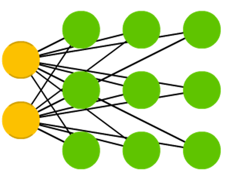
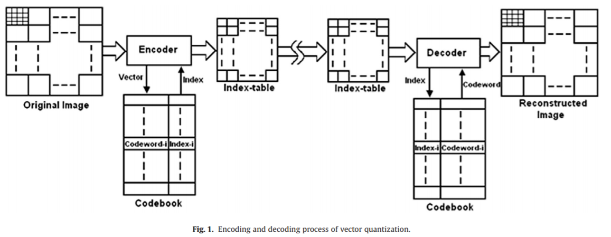
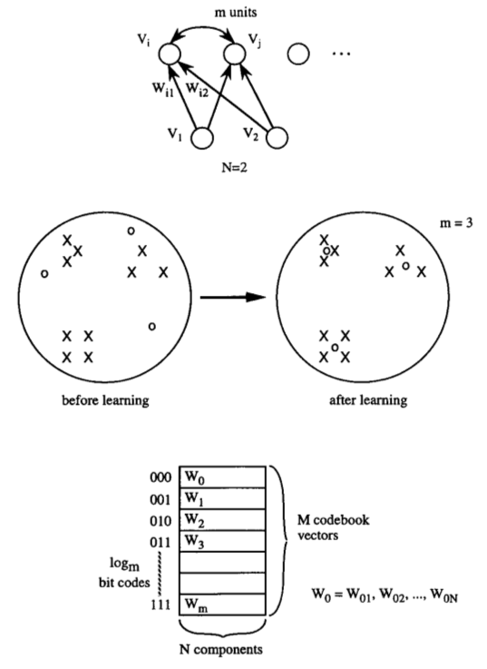

Machine Learning and Neural Networks
Roberto Santana and Unai Garciarena
Department of Computer Science and Artificial Intelligence
University of the Basque Country
Competitive learning: Table of Contents
Competitive learning
Objective
- The goal of of competitive learning is to group the data by forming clusters.
- It is expected that the similarities of instances within the same group found by the network is as great as possible.
- The differences between instances in different classes is as great as possible.
- Generally, no label are used in training the network (i.e., unsupervised learning).
Characteristics
- A layer of neurons that are identical except that their weights are different.
- Neurons compete amongst themselves to be activated.
- Only one neuron is activated at each time (winner-takes-all neuron).
- The learning mechanism strengths the mapping between certain neurons and particular inputs.
- They are used for data mining, data visualization, dimensionality reduction and exploratory data analysis.
Competitive learning
Characteristics
- The learning rule is a variant of Hebbian learning (with weight decay).
- A potential problem is that some neurons may continue to gain the competition while other neurons are never selected.
Typical learning
- The output of all neurons is computed as
\[ y_i = \sum_{j} w_{i,j} x_j, \forall \; i \] - Then, the weights for the winning neuron \(i\) are updated as: \[ \Delta w_{i,j} = \eta (x_j - w_{i,j}) \]
and the winner neuron is computed as the one whose prediction is the best.
Self Organizing Map (SOM)
Cortical sensory homunculus


By OpenStax College - Anatomy & Physiology, Connexions Web site. http://cnx.org/content/col11496/1.6/, Jun 19, 2013., CC BY 3.0, Link
By Mpj29 (Own work) [CC BY-SA 4.0], via Wikimedia Commons
Self Organizing Map (SOM)
Cortical maps
- In the cortex, neurons that process information about sensor and motor commands of a common anatomical region of the body share a similar location.
- The extensions of the brain regions dedicated to process sensory information is different according to the part of the body.
- For example, a higher proportion of neurons is devoted to process data from the hands.
By OpenStax College - Anatomy & Physiology, Connexions Web site. http://cnx.org/content/col11496/1.6/, Jun 19, 2013., CC BY 3.0, Link
Neural Networks
Self Organizing Map (SOM)
Network architecture
-

Characteristics
- Mainly applied for clustering and dimensionality reduction of high-dimensional data.
- Also used as a visualization tool.
- In the reduced space, it retains the topological similarity of data points.
- In most applications, a 2-dimensional lattice-like , representation is learned.
- The network self-organizes depending on the input data.
T. Kohonen. The self-organizing map. Proceedings of the IEEE, 78(9):1464--1480. 1990.
Self Organizing Map (SOM)
Topographic maps
- A feature map uses the topological (physical) organization of the neurons to model features of the input space.
- It is expected that if two inputs are close in the feature space, then the two neurons that respond (fire) to these inputs will be close in the layout of the neural network.
- Similarly, if two neurons that are close in the neural network, fire to two different inputs, then these inputs are close in the feature space.
SOM simulation 3D
SOM simulation 2D
SOM simulation 2D TSP
Kohonen network

Characteristics
- It is a particular type of SOM.
- One input layer and a computational layer of neurons.
- Neurons are arranged in rows and columns.
- All neurons in the computational layer are connected to all input nodes
Kohonen Networks
Initialization and competition
- The synaptic weight vector of each neuron has the same dimension as the input space: \( w_j = (w_{j,1},w_{j,2},\dots,w_{j,n}) \).
- \( i(x) \) is the neuron that best matches the input vector \(x\).
- The particular neuron that satisfies this condition is called the best matching or winning neuron.
- The winning neuron is determined using a discriminant function that, for all \(j\) computes the distance between \(w_j\) and the input \(x\).
Main steps of the learning algorithm
- Initialization
- Competition
- Cooperation
- Adaptation
Kohonen Networks
Cooperation
- Lateral interaction : A network that is firing tends to excite the neurons in its immediate neighborhood more than those farther away.
- A topological neighborhood \(h_{j,i}\) centered around the winning neuron \(i\) and encopassing excited neuron \(j\) is defined.
- The lateral distance between \(i\) and \(j\) is \(d_{j,i}\).
- Then \(h_{j,i}\) is a function of the lateral distance.
Main steps of the learning algorithm
- Initialization
- Competition
- Cooperation
- Adaptation
Kohonen Networks
Cooperation and adaptation
- A topological neighborhood that decays with the lateral distance \( S_{i,j} \) is defined in the grid of neurons as: \[ h_{j,i(x)} = e^{\frac{-d^2_{j,i(x)}}{2\sigma^2}} \]
where \( \sigma \) is the size of the neighborhood.
- Neighbors to the winning neuron have their weights updated as: \[ \Delta w_{j} = \eta(t) \cdot h_{j,i(x)} \cdot (x - w_{j}) \]
where the learning rate \(\eta\) depends on time .
Initialization
- All weights \(w_{j}\) are randomly initialized.
Competition
- For a given input \( x \), the winning neuron \(i(x)\) is computed
\[ i(x) = \min_j \left ( x -w_{j} \right )^2 \]
- Other discriminant functions could be used.
Kohonen Networks
Limitations
- A representative set of sufficient instances is needed in order to develop meaningful clusters.
- It requires several parameters (e.g., \( \sigma_0, \tau_{sigma}, \eta_{0}, \tau_{\eta}) \) and can be sensitive to the choice of these parameters.
- Clusters will often be split into smaller clusters, creating different regions containing similar neurons.
- The algorithm assumes a low dimensional non-linear Euclidean manifold in the data space on which the data lies.
Vector Quantization
-

C. Karri and U. Jena. Fast vector quantization using a bat algorithm for image compression.Engineering Science and Technology, an International Journal. Vol. 19. No. 2. Pp. 769-781. 2016.
Vector Quantization with competitive learning NNs
-

H. C. Howard et al. Competitive learning algorithms and neurocomputer architecture.IEEE Transactions on Computers. Vol. 47. No. 8. Pp. 847-858. 1998.
Learning Vector Quantization

{kind=link}
Characteristics
- Codebook vectors represent class regions.
- Each codebook vector is defined by the weights between one neuron and all the inputs.
- Each prototype represents a region labelled with a class.
- Prototypes are localized in the centre of a class or decision region ("Voronoi cell") in the input space.
- The regions are separated by the hyperplanes between the prototypes.
- A class can be represented by an arbitrary number of prototypes. One prototype can only represent a single class.
Competitive learning algorithms
LVQ variants and developments
- Different variants of LVQ algorithms have been proposed.
- They mainly differ in the learning rules used.
- LVQ1, LVQ2.1 and LVQ3 proposed by Kohonen used heuristic learning rules.
- Other extensions use Margin Maximization and Likelihood-ratio maximization.
LVQ Learning
- Learning consists of modifying the weights in accordance with adapting rules.
- Given an input, the winner neuron is moved closer if it correctly classifies the input or moved in the oppossite direction otherwise.
- The magnitudes of these weight adjustments are controlled by a learning rate which can be lowered over time in order to get finer movements in a later learning phase.
- The class boundaries are adjusted during the learning proces correspond to the class of the prototype.
- The classification is optimal if all inputs fall within a cell with the right class.
D. Nova and P. A. Estevez. A review of learning vector quantization classifiers. Neural Computing and Applications 25.3-4. Pp. 511-524. 2014.
Competitive learning algorithms for quantization (Summary)
Learning Vector Quantization
- Supervised learning algorithm.
- Prototypes will serve to define class regions.
- The goal is to minimize the number of misclassifications.
- The computational cost depends on the number of prototypes.
- They can be used for multi-class problems.
Vector Quantization
- Unsupervised learning algorithm.
- The goal is learning prototypes (codevectors) that minimize the reconstruction error.
- Very related to self-organizing maps.
- It is used for clustering, data compression, and visualization.